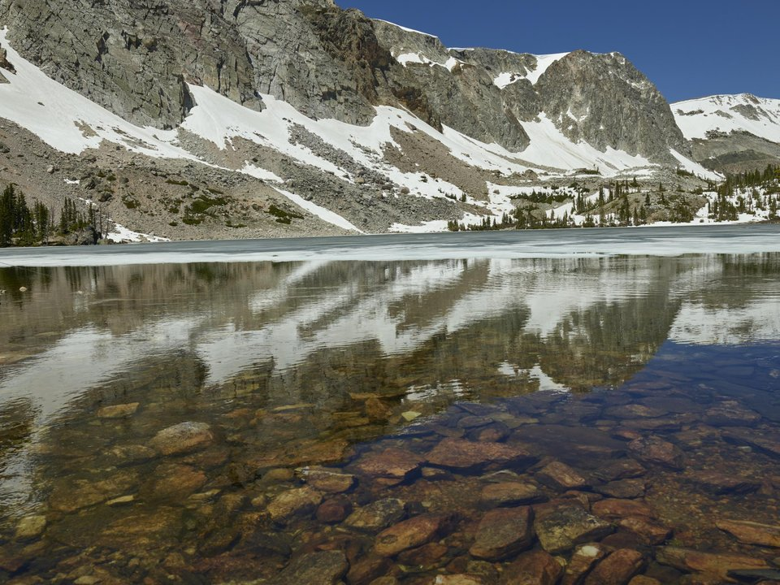

Saratoga · Resort
Saratoga Hot Springs Resort
Private mineral pools, a brewery and golf.
Official details for Saratoga Hot Springs ResortHot springs and trout on the North Platte.
Saratoga is a quiet ranching town in a high valley between the Snowy Range and the Sierra Madre, where hot mineral water bubbles up beside the North Platte River. Land at Shively Field, soak in the free, 24-hour Hobo Hot Springs pool or the private mineral pools at Saratoga Hot Springs Resort, fish the blue-ribbon river, and have dinner at the 1893 Hotel Wolf.

Time illustration: direct distance at 150 KTAS plus 15 minutes for departure and arrival, matching the discovery page. Use ForeFlight for your actual flight plan.
Check the weekend weather at both ends → Flight category, your minimums and the crosswind on the best runway.
KSAA, Shively Field, is a non-towered town airport at 7,014 feet with an 8,801-foot runway, a few minutes from town.
Shively Field, Saratoga, WY
High elevation and strong Wyoming winds; compute performance carefully. Fees vary for turbine and jet aircraft. No live fuel price is shown.
Mountain flying: high density altitude on summer afternoons, mountain wave and strong winds over the ridges, afternoon thunderstorms from July to September, wildfire smoke in late summer, and winter snow and icing. Consider a mountain-flying course before you go. About 1400 nm from Myrtle Beach: two long days each way with several fuel stops. Plan a week, or overnight on the way out and back.
Rates and availability need travel dates.
Private mineral pools, a brewery and golf.
Official details for Saratoga Hot Springs ResortAn 1893 stagecoach hotel with a steakhouse.
Official details for Hotel WolfPrices and availability for your dates, through our partner Stay22. This is an affiliate link: we may earn a commission at no cost to you. The picks above are never paid.
Reserve weekend dinners.
Prime rib and steaks in the historic dining room.
Official details for Hotel WolfSnowy Mountain Brewery and the resort restaurant.
Official details for Saratoga Hot Springs ResortHobo Pool is free and open around the clock.
A high mountain road over 10,800-foot Snowy Range Pass (summer).
Saratoga ChamberThis prototype links to the local visitor site. It does not yet match events to your travel dates.
Floats on the North Platte.
Saratoga Chamber for Fishing seasonMountain lakes and wildflowers.
Saratoga Chamber for Snowy Range Pass openSoaking in the snow.
Saratoga Hot Springs Resort for Hot springs seasonCheck the local calendar when choosing a weekend, and confirm dates and tickets with the organizer.
A sample Saratoga weekend. This is a two-day flight each way; plan a week. No bookings or availability confirmed.
Land at KSAA mid-morning.
Lunch in town.
A short walk, then back to the airport.
Land at KSAA, subject to weather, density altitude and your actual flight plan.
Soak at Hobo Pool.
Dinner at the Hotel Wolf.
A guided float on the North Platte.
The Snowy Range Byway.
Brewery dinner at the resort.
A last soak.
Compute takeoff performance and allow time at the FBO.
Mountain afternoons bring wind, turbulence and storms; leave early.
The main sight.
Explore.
Dinner in town.
This guide is part of a multi-stop flying trip. Set your dates and aircraft, then swap stops to make it your own.
These details make the difference between an appealing list and a usable getaway.
Lodging and a fishing guide.
About 1,400 nm from Myrtle Beach: two days each way.
Over 7,000 feet; take it easy the first day.
June to September, and winter for the springs.
Picks and links reviewed by WingAway Weekends. Hours, prices, menus and availability change often, so confirm directly with each place before booking. Spotted something out of date, or have a favorite we missed? Email us at hello@wingawayweekends.com.
WingAway Weekends helps you discover the destination. Use ForeFlight and current official aviation information for route, performance, weather, NOTAMs and preflight decisions. Flight planning and PIC responsibility stay with the pilot.
One fly-in weekend, a Fly to Lunch pick and the newest guides, about once a month.
Free. Unsubscribe anytime.